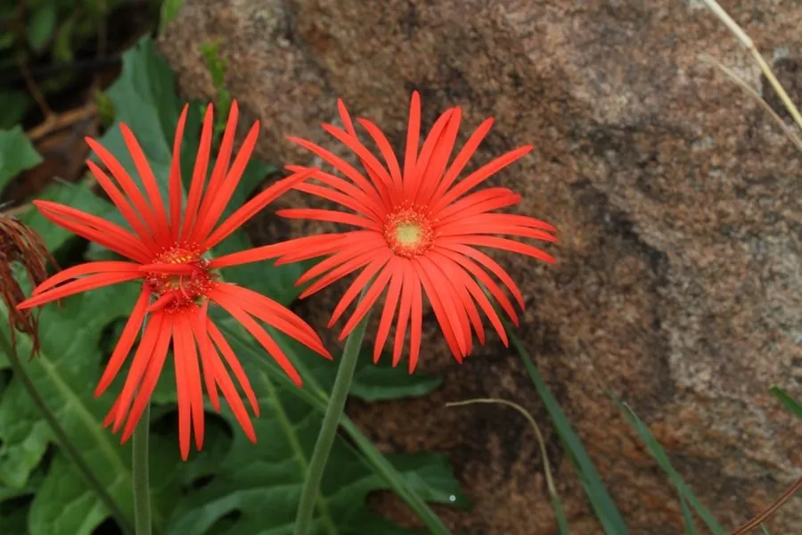

花卉与草本 · 植物界
非洲菊 Gerbera jamesonii

菊科多年生草本，花朵大而艳丽、花期长，是世界重要的切花之一，俗称扶郎花，原产南非，也是花篮和花束的常用花材。
- 分类
- 门被子植物门纲木兰纲目菊目科菊科属非洲菊属
- 栖息环境
- 南非的草原与山坡，喜温暖、阳光充足、通风
- 地理分布
- 原产南非，现世界各地广泛栽培，中国云南是重要产区
- 保护级别
- 暂无评估
物种志
非洲菊为菊科非洲菊属多年生草本，株高 30–60 厘米，叶基生，呈莲座状，叶片长椭圆形，羽状浅裂，背面有短毛。花葶自叶丛抽出，头状花序单生，直径 8–15 厘米，舌状花多层，有红、橙、黄、粉、白等色，中央管状花密集，花期 4–11 月；果实为瘦果。
非洲菊原产南非，喜温暖、阳光充足和通风良好的环境，不耐寒也不耐酷热，适合在疏松肥沃、排水良好的土壤中栽培。它是世界五大切花之一，花大色艳、瓶插寿命长，常用于花束、花篮和婚礼布置；在中国，非洲菊也被称作“扶郎花”。栽培以分株和组织培养繁殖为主，切花采收时斜剪花梗并用清水养，可延长观赏期。
形态与习性
- 株高30–60 厘米，叶基生莲座状
- 花期4–11 月，温室可全年开花
- 果期花后结瘦果
- 光照喜充足阳光，夏季高温需遮阴
- 水分喜湿润，忌积水
- 土壤疏松肥沃、排水良好的沙壤土
- 繁殖分株、组织培养
- 主要用途切花、花束、花篮、盆栽
趣味知识
- 非洲菊是世界五大切花之一，花大色艳、瓶插寿命长。
- 它的头状花序由外围舌状花和中央管状花组成，颜色丰富。
- 非洲菊在中国也称“扶郎花”，是花篮和花束的常用花材。
- 采收切花时斜剪花梗、及时换水，可以明显延长观赏期。